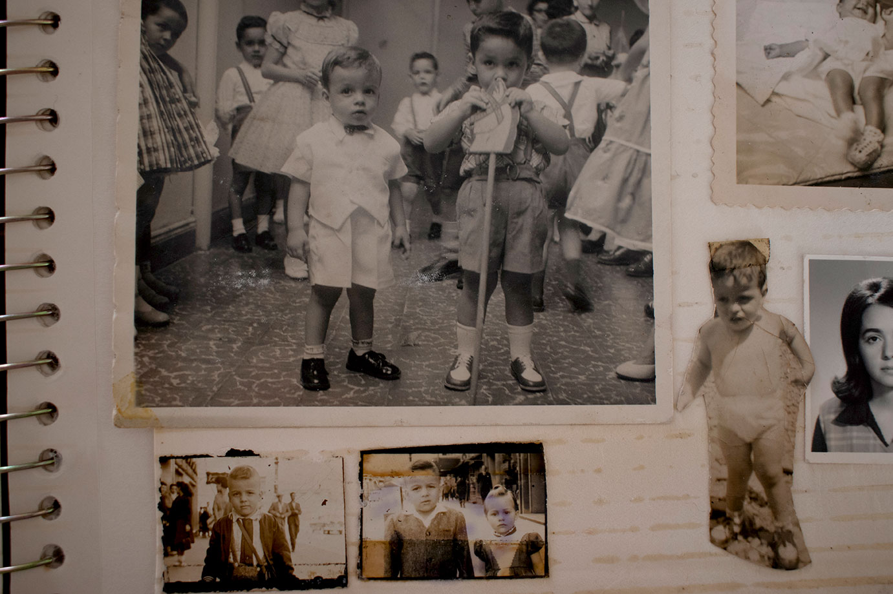
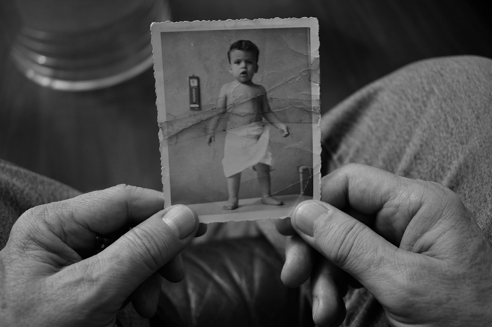
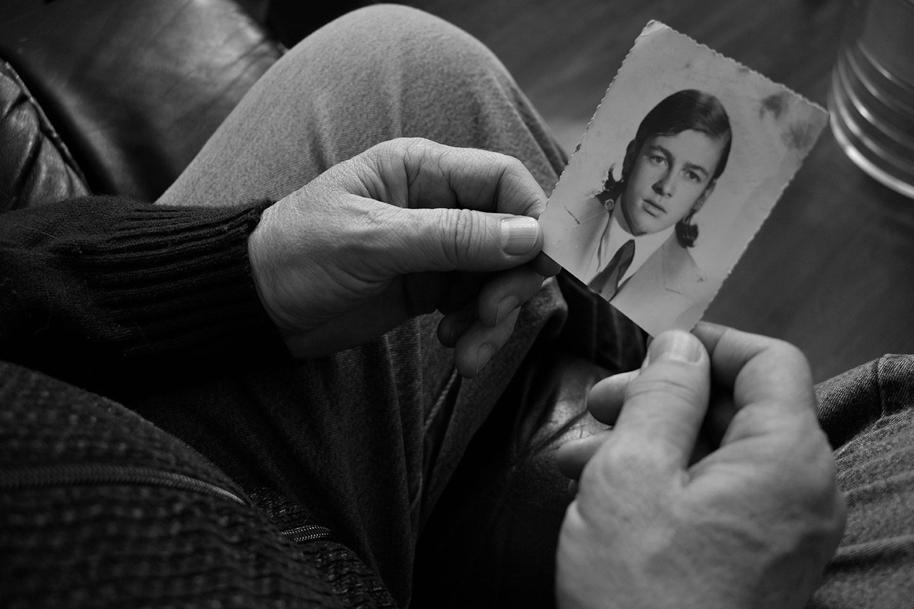
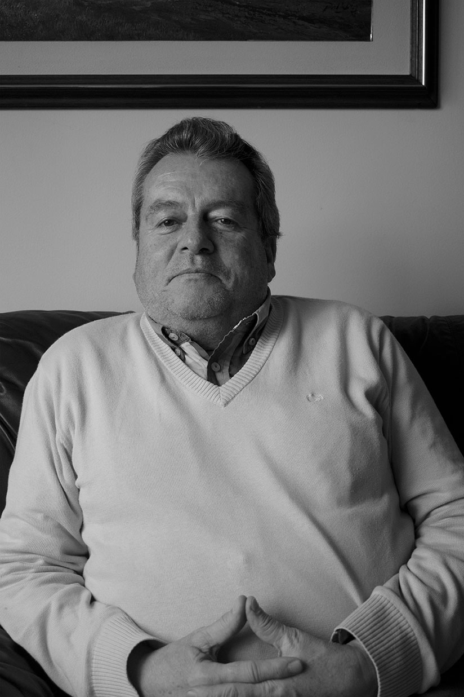

IF
Las fotografías nos relatan historias pasadas sobre algo que estuvo y siempre estará. Nos permiten retener recuerdos para así ser enseñados y heredados, nos cuentan vidas a través de retazos y formas. Este ensayo fotográfico busca dar ejemplo de cómo las fotografías son evidencias de vida, de memorias y de recuerdos que perduran, pero que simultáneamente, también se deterioran.
Los dos personajes presentes en la imagen a pesar de todo tratan de representar un mismo ser. Se entiende que el retrato lateral de un niño (que aparentemente, dejó de serlo en el mundo real) se encuentra mirando hacia las manos que lo acompañan desde el exterior de esa imagen, las manos de una persona mayor. Este niño se mantiene vivo a través de la ya desgastada materialidad que se le brindó a la fotografía hace notorias décadas. A través de la comparación de la piel, desde el rostro del infante hasta las manos de este, ya crecido, es de donde percibimos este cambio que, a pesar de mostrarse opuesto, se define mejor como un cambio progresivo del que es posible llevar un registro.
La erosión, ese desgaste producido en la superficie de un cuerpo por el roce o frotamiento de otro. El paso del tiempo dejando sus marcas en el papel de cada uno de los recuerdos aunque en la mente permanezcan nitidos. El abum fotografico se convierte en un elemento indispensable en la identidad de un individuo y en la forma en la que es y será recordado por siempre.
La fotografía al igual que la vida, se desgasta, se quiebra y se remienda. Su materialidad permite crear un vinculo ancestral y así mismo le otorga un poder mistico que despierta sentimientos y revive memorias. En esta imagen podemos ver los rastros del tiempo tanto en el papel como en la piel de quien sostiene la imagen. Una piel más sabia y llena de historias pero a su vez fragil y propensa a quebrarse.
Lo mágico de la fotografía es que permite revivir personas, incluso después de que han abandonado este plano terrenal. Sus grietas, color, textura y olor son capaces de transportar al momento en el que fueron tomadas, escuchar risas y voces que ocurrieron allí, y que vivirán ahí por siempre.
En imágenes de formato pequeño, empleadas para documentos que fue requiriendo, se percibe una secuencia de edad, la progresión del cambio que un mismo rostro fue padeciendo, además del evidente deterioro de la imagen según la edad en la que se le fue tomada.
Antes y ahora. Esta fotografía le permitio recordar momentos de su adolecencia que lo llevaron a ser la persona que es hoy en día. La imagen alberga más información de la que se muestra fisicamente ya que se almacena de forma conjunta en su memoria. El peinado y hasta la ropa le permiten dar una lectura rapida a la imagen que lo situa en un día, una hora y un lugar especifico incluso si no fue el de la fotografía. Irónicamente, la madurez de su edad refleja una mejor calidad en la nitidez de la imagen y la materialidad de la fotografía en sí. En la medida en la que los recuerdos son más recientes, su piel, como se menciona en este ensayo, está más erosionada por el paso del tiempo. En la medida en la que acumulamos recuerdos y vivencias, así mismo se van marcando en nuestra piel para llevarlas el resto de nuestra vida. El aquí y el ahora. Fotografías digitales, muy nítidas y que carecen de la posibilidad de deteriorarse que capturan un rostro lleno de marcas de los años, caricias de cada momento o golpes que ha dado la vida. La fotografía se vuelve menos valiosa y por el contrario la vida se valoriza más.